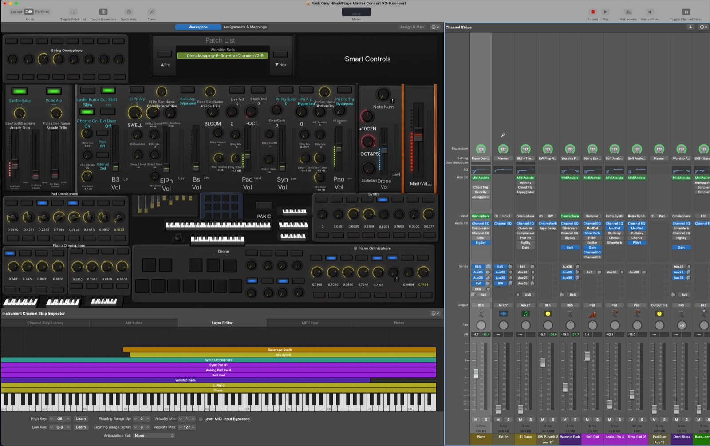

Mac app
Build the rig
Mixer Console, Concert Editor, MIDI Routing, Capture & Catalog. Everything is constructed from your own Concert.


MIDI Assistant turns an iPad into the control surface for everything on stage — MainStage, your plugins, your keyboards — with a real Mixer, a Concert Editor, and transitions that never jump.
Mixer Console, Concert Editor, MIDI Routing, Capture & Catalog. Everything is constructed from your own Concert.
Loads into a MainStage channel strip. Sample-accurate, in-host, on a lock-free C++ kernel.
Four layouts, one app, always in sync with the Mac. The surface you actually touch.
One tap on a Section fires the whole cue — program changes, fader ramps, patch swaps — out to MainStage, your plugins, and your keyboards at once. The iPad is not a remote for one thing. It is the front of the whole rig.

Every deep parameter lives on a SubScreen you designed — organ drawbars, pad matrices, reverb engines — one tap from the main Mixer.
Hardware routes through Namespaces, so swapping a keyboard means re-pointing one name, not rebuilding every mapping.
MainStage has no automation. MIDI Assistant gives you the parts that matter live, and makes them safe.
A folk trio and a six-channel worship rig can look nothing alike — from the same app.
Faders, a button matrix, knobs, and SubScreens — constructed dynamically from your Concert.
Scenes and Sections with Program Change, CC, and SysEx triggers that fire the instant a Scene loads.
Keyboard split visualization, per-Section countdowns with a transition warning, tempo, and Panic.
Virtual ports and Namespaces. Rename anything. Survive a gear swap without touching a mapping.
Convert a Section's faders to smooth, shaped ramps in one action.
Snapshot a soundcheck balance into a named, reusable preset in seconds.
Switch layouts from the toolbar — no reconnecting, no lost state.


Requires macOS 13 or later. The Remote connects over your local network — nothing leaves the room.